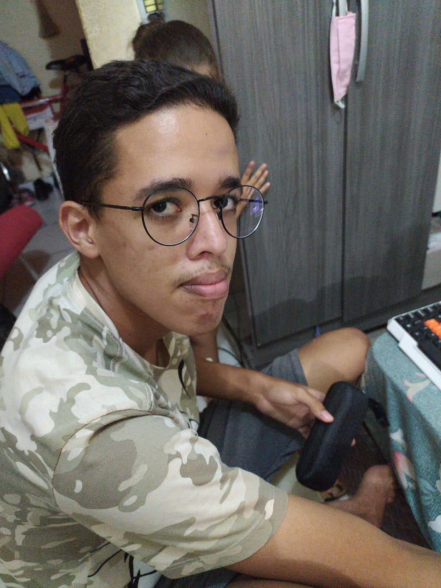

O grupo foi fundado com o objetivo de realizar as atividades nas matérias dadas pelo Ensino Remoto Emergencial e para aumentar a assiduidade do grupo, criamos uma "corporação" com logo e tudo. Os integrantes são: Douglas Nunes, Ewerton Vitor, Jaqueline dos Santos, João Paulo Moreira e Rute Karollaye. A seguir veremos alguns fragmentos dos passados sombrios de tais programadores.
Equipe
$_kirigaia_$
Pouco se sabe sobre a lenda do usuário $_kirigaia_$, mas é certeza que ele é perigoso. Vulgo Douglas, supostamente aprendeu a programar com 5 meses de vida e desde então vem quebrando sistemas bancários e servidores unicamente para testar suas habilidades. Criador das páginas index, about_us, mumford e Beatles.
Paulo quebra-códigos
Pouco importa ter conhecimento e habilidade, essa figura lendária desenvolveu desde criança a suprema técnica da "gambiarra" que lhe rendeu inúmeras façanhas. Aos sete anos, Paulo roubos arquivos da CIA, aos onze hackeou satélites americanos para difundir o comunismo. Agora essa lenda viva busca um novo desafio que sua técnica em gambiarra não possa resolver. Criador da página Queen.
Galileu

Especialista em invasão à banco de dados, Ewerton desenvolve maweres, worms, backdors e vários outros desde a época do virus ILOVEYOU e carrega em seu legado um prejuiso de 78 bilhões de dólares em danos por todo o mundo e planeja futuramente congelar toda a intenet, prometendo ser sua maior façanha. Criador da página OficinaG3.
J@qu3
Seu legado é conhecido por todos os cantos da Intenet. Jaqueline é capaz de criar ataques DDoS por qualquer dispositivo com acesso a rede, só demonstra 1% de sua periculosidade. Reza a lenda que ela possui acesso a qualquer computador do planeta. Criadora da página One Republic.
*-_RUT#_-*
Esse é o integrante que menos se sabe sobre, mas as lendar repercurtem pela internet em fórums sobre estudo avançado de cybersegurança. Alguns usuários afirmam que Rute pode parar qualquer ataque hacker, seja ele feito por um grupo grande e bem financiado ou não. A ultima notícia sobre ela era de trabalhar para o governo russo em combates cibernéticos contra terroristas. Criadora da página Projota e Legião Urbana.